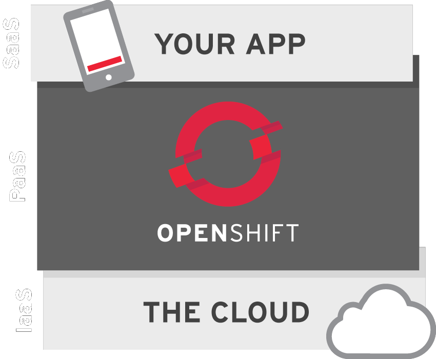

A tour of
from the
Command Line
featuring:
ssh, git, and rhc
Agenda
State of the Open Cloud
Has it been
Liberated?
- The OS ✓
- The Cloud ?
- Infrastructure as a service ✓
- Platform as a service ✓
- Software as a service ×
cloud autopsy
OpenShift is…
OPEN SOURCE
hosting,
build,
and
auto-scaling
for applications
providing instant access to all of this, and more:

these technolgies are bundled / made available as
Cartridges

rhc cartridge listOn OpenShift, your application environment is securely incapsulated within a 'Gear', providing guaranteed access to system resources
OpenShift provides a peaceful environment for Devs AND SysAdmins to work together in
- Operations care about stability and performance
- Developers just want environments without waiting
- And neither one wants to have to fight the other to get their work done
rhc
rhc makes it easy for developers to talk to your OpenShift REST API
pre-requisites:
sudo gem install rhcrhc setupWill automatically:
- authenticate your OpenShift account
- verify your local ssh key configuration
- configure your host url identifier
Create an application
Start by provisioning your application environment and database in a single step:
rhc app create APP_NAME CARTRIDGE CART2 CART3for a basic Nodejs and MongoDB application, run:
rhc app create scale12x nodejs-0.10 mongodb-2.2<command-line output>
Application Options
-------------------
Namespace: shifter
Cartridges: nodejs-0.10, mongodb-2.2
Gear Size: default
Scaling: no
Creating application 'scale12x' ... done
Waiting for your DNS name to be available ... done
Downloading the application Git repository ...
Cloning into 'scale12x'...
Your application code is now in 'scale12x'scale12x @ http://scale12x-shifter.rhcloud.com/ (uuid: 5175981a5973ca7a69000501)
-------------------------------------------------------------
Created: 1:05 PM
Gears: 1 (defaults to small)
Git URL:
ssh://5175981a5973ca7a69000501@scale12x-shifter.rhcloud.com/~/git/scale12x.git/
SSH: 5175981a5973ca7a69000501@scale12x-shifter.rhcloud.com
nodejs-0.10 (Node.js 0.10)
------------------------
Gears: Located with mongodb-2.2
mongodb-2.2 (MongoDB NoSQL Database 2.2)
----------------------------------------
Gears: Located with nodejs-0.10
Connection URL:
mongodb://$OPENSHIFT_MONGODB_DB_HOST:$OPENSHIFT_MONGODB_DB_PORT/
Database Name: scale12x
Password: PTk4cCetTj2w
Username: admin
RESULT:
Application scale12x was created.Success!
You now have a basic node.js and MongoDB skeleton application live on the Internet!
http://scale12x-shifter.rhcloud.com/
Your gear is now configured with:
- it's own git repo
- it's own web server
- ssh access
- logging
- a database
- publicly accessible hostnames, automatic DNS
Application details are always available via:
rhc app show scale12xYou can tail your remote logs with:
rhc tail scale12xor, connect directly to your app via ssh:
rhc ssh scale12xSSH
Environment Variables
Allow you to write code that will run anywhere
//provide a sensible default for local development
mongodb_connection_string = 'mongodb://127.0.0.1:27017/' + db_name;
//take advantage of openshift env vars when available:
if(process.env.OPENSHIFT_MONGODB_DB_URL){
mongodb_connection_string = process.env.OPENSHIFT_MONGODB_DB_URL + db_name;
}//same advice applies for your webserver's PORT and IP address
var port = process.env.PORT || process.env.OPENSHIFT_NODEJS_PORT || 3000
var ip = process.env.OPENSHIFT_NODEJS_IP || '127.0.0.1'Application passwords, keys, and secrets can be abstracted using the same technique:
rhc env set SECRET_KEY=0P3N_S0URC3rhc env listrhc env helpTeam members can supply their own keys during app creation, for a single step clone+deploy:
rhc app create scale12x nodejs-0.10 mongodb-2.2 \
--from-code=http://github.com/USER/TEAM_REPO.git \
--env SECRET_KEY=0P3N_S0URC3Team Collaboration
There are several ways to collaborate:
- using github or bitbucket
- using ssh keys
- or, using OpenShift's new team collaboration tools
git
Deploying updates
A standard git development workflow can be used to rebuild and update your remote application:
- Add your changes to a changeset
git add index.html - Mark the changeset as a Commit
git commit -m 'updating H1' - Push the Commit to OpenShift
git push
Adding cartridges to existing apps is easy:
rhc cartridge add jenkins-1adds jenkins CI to your application's build cycle
Release Management
Release Tracking & Rollbacks
rhc deployment listrhc deployment activate CHECKSUMWant to deploy a different branch (not 'master')?
rhc app configure --deployment-branch MY_BRANCHhttps://www.openshift.com/blogs/introduction-to-deployments-and-rollbacks-on-openshift
Tips for Local Development
Use port-forwarding to create a local connection to your remote database instance:
rhc port-forward scale12Starting a local webserver is different in each language.
For nodejs, you can start a local server with:
npm installnpm startScaling
Spinning up an auto-scaling Linux environment:
rhc app create scale12 -s nodejs-0.10 mongodb-2.2just add "-s" to your app create command
Set a min and max scale
rhc cartridge scale nodejs-0.10 -a scale12 --min 2 --max 12or, manually scale an application
rhc app scale-uprhc app scale-downFrom inside a hosted environment:
haproxy_ctld --uphaproxy_ctld --downHAProxy on / off switches
haproxy_ctld_daemon starthaproxy_ctld_daemon stophaproxy_ctld_daemon restartgenerating load
For scalable applications, generate load from the command line to see automatic scaling in action:
while true ; do ab -n 1000 -c 50 https://scale12-shifter.rhcloud.com/ ; doneHAProxy Web UI
http://$YOUR_APP_DNS/haproxy-status/
HAProxy raw data
http://$YOUR_APP_DNS/haproxy-status/;csv
Questions?
Want to learn more?
- Come hang out with us on IRC: #openshift on Freenode
- Link to these slides: http://socuteurl.com/widdlepuppytail
- Free hosting on OpenShift: OpenShift Online
- OpenShift source code: OpenShift Origin
- Red Hat Enterprise Support: OpenShift Enterprise
presented by: